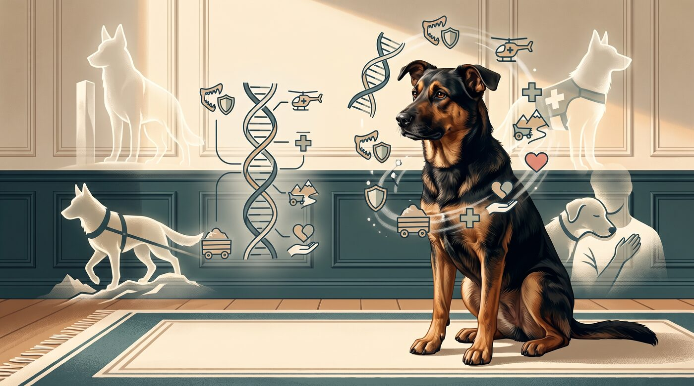
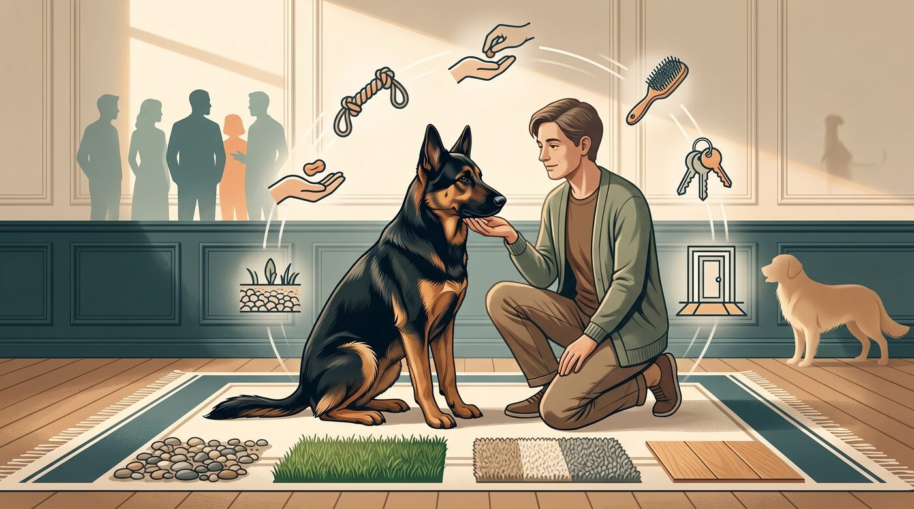
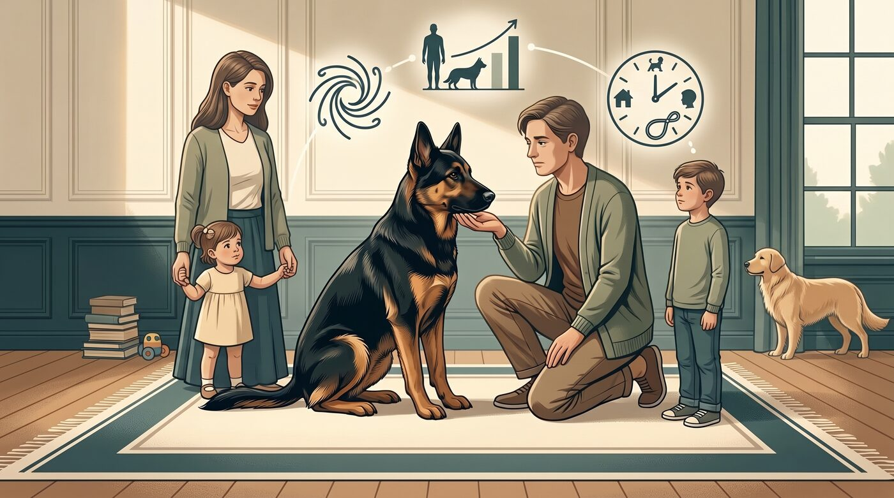
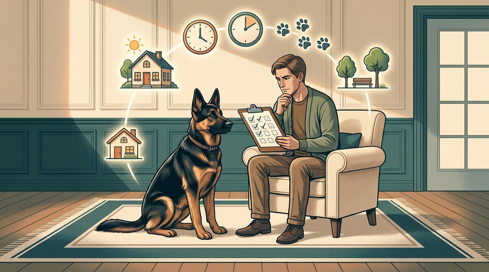
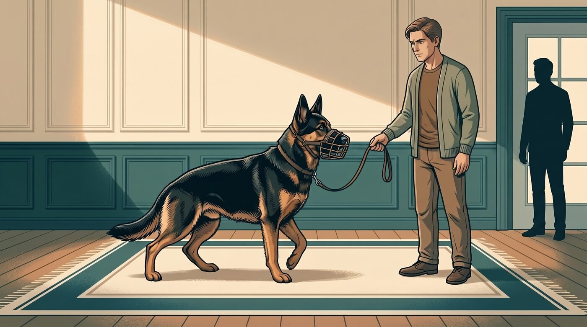
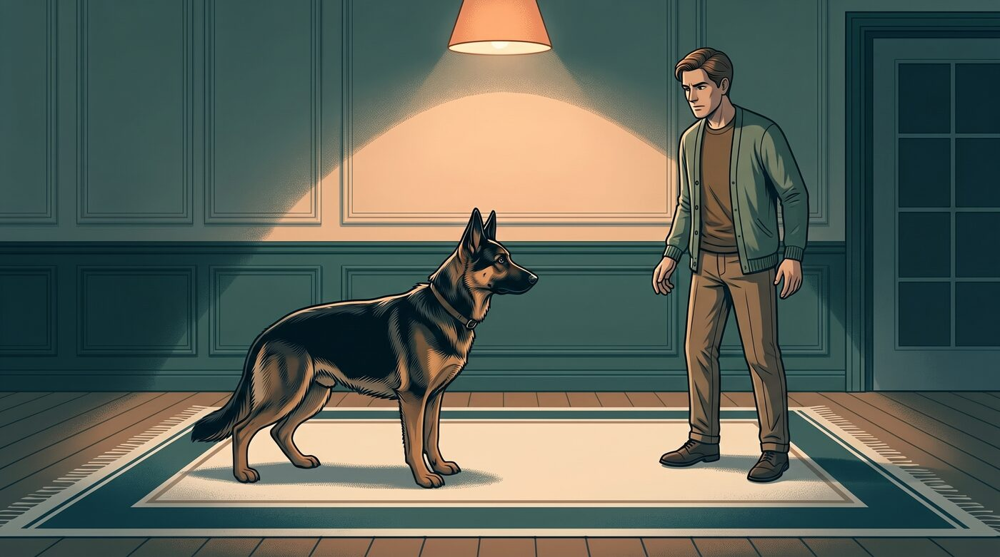

Quando alguém diz que um cachorro é "bravo", a imagem que vem à cabeça quase sempre é a mesma: um cão grande, musculoso, com cara séria e latido forte. É fácil concluir que o problema está no sangue, na raça, na aparência.
Mas, na prática, a história é mais complicada. Um cão pode ser classificado como "bravo" porque mordeu, porque avançou, porque reagiu de forma intensa. Só que o caminho até ali raramente começa e termina na raça.
Esse artigo não vai defender nem condenar raças específicas. O objetivo é ajudar você a entender o que está por trás do rótulo "cachorro bravo", quando a genética realmente faz diferença e como evitar que um cão se torne um risco para a família e para as pessoas ao redor.
1. "Raça brava" é mais mito do que realidade
A primeira coisa que eu observo é que "raça brava" é uma etiqueta muito ampla. Ela mistura cães de guarda, cães de trabalho, cães com histórico de luta e cães que simplesmente nunca foram bem socializados.
Algumas raças foram selecionadas para funções que exigem coragem, força e instinto protetor. O American Kennel Club (AKC) lista raças como Pastor Alemão, Rottweiler, Doberman, Bullmastiff, Boxer, Akita e outras entre as mais protetoras e indicadas para guarda.
Isso não significa que todo Pastor Alemão ou todo Rottweiler seja "bravo" no sentido de perigoso. Significa que essas raças tendem a ser mais vigilantes, mais ligadas à família e mais reativas a ameaças percebidas. Sem orientação adequada, esse instinto pode se transformar em comportamento indesejado.
Por outro lado, um cão de raça considerada "dócil" pode morder se for mal manejado, assustado, provocado ou treinado de forma inadequada. A raça influencia, mas não determina sozinha o comportamento final.
2. O que a raça realmente influencia

A genética importa. Ela define tamanho, força da mordida, nível de energia, sensibilidade, tolerância a estímulos e tendência a certas reações. Um cão grande e forte, mesmo com boa intenção, pode causar danos maiores se perder o controle.
Raças do Grupo de Trabalho, por exemplo, foram desenvolvidas para tarefas como guardar propriedades, puxar cargas e realizar resgates. O AKC descreve esses cães como inteligentes, fortes, vigilantes e alertas.
Algumas raças foram historicamente usadas em funções de proteção e combate. O Cane Corso, por exemplo, é descrito como altamente protetor, inteligente e treinável, mas naturalmente reservado com estranhos. O AKC reforça que ele não é inerentemente agressivo, porém tem instinto de guarda acentuado.
Isso quer dizer que, ao escolher uma raça com forte instinto protetor, você assume uma responsabilidade maior. Não é um cão para deixar "se virando" no quintal, sem interação, sem regras e sem orientação. A genética dá o potencial; o manejo define como esse potencial vai se expressar.
3. Ambiente e criação pesam mais do que o rótulo

Se você conversar com profissionais de comportamento canino, vai ouvir com frequência que o ambiente e a criação têm peso enorme. Um cão pode nascer com predisposição, mas o que ele vive nos primeiros meses de vida costuma definir muito do comportamento adulto.
Cães que não tiveram contato positivo com pessoas, outros animais, ruídos, superfícies diferentes e situações variadas podem se tornar medrosos ou reativos. O medo, muitas vezes, se transforma em reação defensiva: latido, avanço, mordida.
A VCA explica que agressão contra membros da família pode ter várias causas, incluindo medo, defesa, conflito, guarda de recursos e ansiedade. A segurança e a prevenção de mordidas são o primeiro passo, antes mesmo de qualquer tentativa de modificação de comportamento.
Punições físicas, enforcadores, choques e métodos baseados em dor e intimidação tendem a piorar o quadro. A VCA alerta que punição física pode facilmente levar a agressão defensiva ou de conflito, tanto no momento quanto em interações futuras.
Ou seja: um cão rotulado como "bravo" muitas vezes é, na verdade, um cão assustado, mal compreendido e mal orientado.
4. Quando a raça faz diferença de verdade

Existem situações em que a raça não pode ser ignorada. Se você busca um cão para guarda, trabalho ou esportes específicos, faz sentido escolher uma linhagem com características adequadas a essa função.
Da mesma forma, se você mora em apartamento, tem rotina tranquila, pouca experiência com cães ou crianças pequenas, talvez não seja o momento de adotar uma raça de grande porte, muito forte e com alto instinto protetor.
O AKC destaca que raças naturalmente protetoras podem ser companheiras maravilhosas, mas, por serem grandes e terem esse instinto, exigem que o tutor saiba treinar e socializar adequadamente.
Um Pastor Alemão, um Rottweiler ou um Akita podem ser excelentes cães de família quando bem conduzidos. Mas o custo do erro também é maior. Um comportamento reativo nessas raças pode ter consequências mais graves do que em um cão pequeno e menos forte.
A raça importa quando você escolhe um cão compatível com sua realidade e quando assume a responsabilidade de oferecer o que ele precisa para viver bem em sociedade.
5. Sinais de que o comportamento merece atenção

Não espere uma mordida séria para agir. Comportamentos reativos costumam dar sinais antes de se tornarem um problema grave.
Fique atento se seu cão:
- Rosna com frequência em situações comuns, como aproximação de visitas, toque na coleira ou tentativa de pegar um objeto
- Avança em direção a pessoas ou outros cães sem motivo aparente
- Reage de forma intensa a estímulos simples, como barulhos, movimentos ou presença de crianças
- Demonstra guarda excessiva de comida, brinquedos, cama ou pessoas
- Apresenta postura rígida, olhar fixo, orelhas e cauda em posição de alerta constante
- Mordeu alguém, mesmo que "sem gravidade", ou deixou marcas na pele
A VCA recomenda identificar todas as situações que podem levar a agressão e prevenir o acesso a essas circunstâncias, seja por confinamento, uso de coleira e guia, ou manipulação ambiental.
Isso não significa isolar o cão para sempre. Significa criar segurança enquanto você busca ajuda profissional. Um cão que já demonstrou comportamento agressivo não deve ser tratado com base em "achismos" ou conselhos de internet.
6. O que fazer se você já tem um cão "bravo"

Se você já convive com um cão classificado como bravo, o primeiro passo é assumir a responsabilidade. Não adianta culpar a raça, o criador, o resgate ou o comportamento anterior se você não mudar a rotina a partir de agora.
Comece garantindo segurança:
- Use guia e, se indicado por profissional, considere o uso de muzzle (focinheira) em situações de risco
- Evite expor o cão a gatilhos conhecidos sem controle
- Não permita que crianças, visitas ou outros animais se aproximem sem supervisão
- Interrompa brincadeiras que deixem o cão excessivamente excitado
Em seguida, busque ajuda de um profissional qualificado em comportamento canino, de preferência com abordagem baseada em reforço positivo e ciência do comportamento. A VCA orienta ensinar o cão a aceitar o controle do tutor usando recompensas que ele valoriza, e assumir o controle de recursos como petiscos, atenção e brinquedos para reforçar comportamentos desejáveis.
Punições, puxões fortes, enforcadores e métodos intimidativos podem até "funcionar" no curto prazo, mas costumam aumentar medo e reatividade no longo prazo. O objetivo não é criar um cão submisso pelo medo, mas um cão confiante e previsível.
7. Como escolher um cão sem criar um problema

Se você está pensando em adquirir um cão, especialmente de uma raça com forte instinto protetor, faça uma autoavaliação honesta.
Pergunte-se:
- Tenho tempo, energia e disposição para exercitar e treinar esse cão diariamente?
- Estou disposto a investir em treinamento e socialização desde filhote?
- Minha rotina permite oferecer estímulos adequados ao nível de energia da raça?
- Tenho espaço físico compatível com o porte e as necessidades do cão?
- Estou preparado para lidar com um cão forte, que pode puxar, reagir e exigir controle?
- Existe alguma restrição legal ou de condomínio para essa raça na minha região?
O AKC reforça que raças protetoras são leais, corajosas, fortes e vigilantes, mas isso exige um tutor disposto a oferecer estrutura, regras e socialização.
Se a resposta para várias dessas perguntas for "não", talvez seja melhor considerar raças com perfil mais tranquilo, ou adotar um cão adulto já avaliado por profissionais de comportamento.
O que a bravura realmente esconde
Antes de rotular um cão como "bravo", eu tentaria entender o que ele está tentando comunicar. Muitas vezes, o que chamamos de bravura é apenas medo, defesa ou falta de orientação. A raça importa, mas o que define o comportamento é o conjunto de genética, criação, ambiente e manejo.
Este conteúdo é educativo e não substitui avaliação de um profissional de comportamento canino ou médico-veterinário. Se seu cão apresenta sinais de agressividade, reatividade ou comportamento imprevisível, procure orientação especializada.